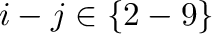
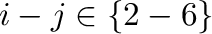

Next: strand() make Up: The secondary_structure module: secondary Previous: The secondary_structure module: secondary Contents Index
This makes restraints enforcing an α-helix (mainchain conformation class “A”) for the residue segment specified by residues (which can be created using the model.residue_range() function). The helix is restrained by Φ,Ψ binormal restraints, N-O hydrogen bonds, Cα- Cα distances for , Cα-O distances for , and O-O distances for  6.5. Note that this requires all heavy atoms to be present to work properly, so will not work with the Cα-only topology.
In many cases (e.g., most comparative modeling runs) you will already have binormal, Cα- Cα, and N-O restraints active (which will conflict with helix restraints), so it is recommended that you first use Restraints.unpick() followed by Restraints.condense() to remove these.
To actually add the restraints, pass the new object to Restraints.add().
# Example for model.build_sequence(), secondary_structure.alpha() from modeller import * from modeller.optimizers import conjugate_gradients # Set up environment e = environ() e.libs.topology.read('${LIB}/top_heav.lib') e.libs.parameters.read('${LIB}/par.lib') # Build an extended chain model from primary sequence, and write it out m = model(e) m.build_sequence('GSCASVCGV') m.write(file='extended-chain.pdb') # Make stereochemical restraints on all atoms allatoms = selection(m) m.restraints.make(allatoms, restraint_type='STEREO', spline_on_site=False) # Constrain all residues to be alpha-helical # (Could also use m.residue_range() rather than m.residues here.) m.restraints.add(secondary_structure.alpha(m.residues)) # Get an optimized structure with CG, and write it out cg = conjugate_gradients() cg.optimize(allatoms, max_iterations=100) m.write(file='alpha-helix.pdb')